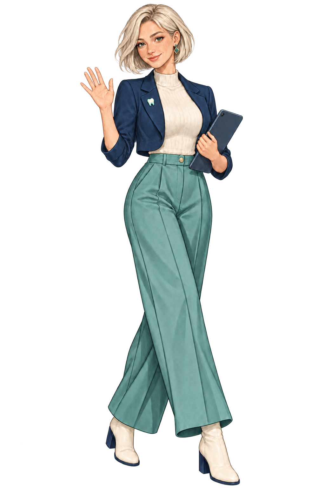

D · Mezcla solicitada
Editorial híbrida
El outfit de C se conserva: blazer azul marino, top marfil, pantalón verde agua y botines. La cara ahora tiene ojos humanos, nariz definida, pecas sutiles y proporciones naturales inspiradas en A.